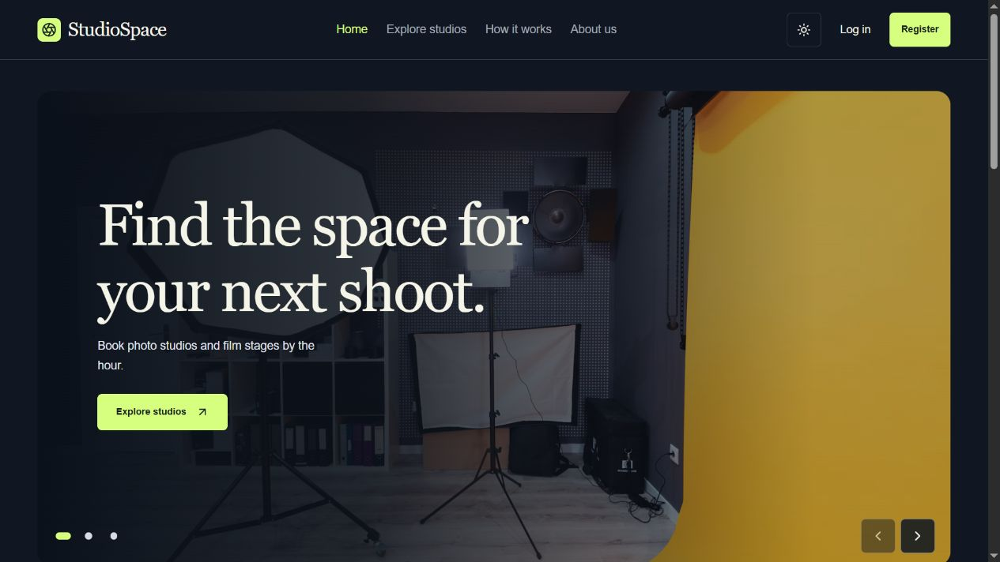

Frontend
- HTML5
- CSS3 / SCSS
- JavaScript
- TypeScript
- React
- Next.js
- Redux
- Tailwind CSS
- DaisyUI
- Bootstrap
- Material UI
- jQuery
Junior Frontend Developer
I build responsive, user-focused websites with React and Next.js.
Final-year EEE student · Rangpur, Bangladesh
I'm a final-year Electrical and Electronic Engineering student at Begum Rokeya University, Rangpur. My curiosity about technology has taken me from embedded systems and PCB design to building web applications.
After completing a MERN stack web development course, I've been putting my skills into practice with React, Next.js, TypeScript, and MongoDB. I enjoy turning practical ideas into clear, responsive interfaces—from finding a creative workspace to comparing daily market prices in Bangla.
Beyond web development, my interests include embedded systems, renewable energy, and materials research. I'm an undergraduate researcher in DFT-based thermoelectric characterization and participated in the FPES Summer School at Tsinghua University in August 2026.
I'm seeking a junior frontend developer role where I can contribute, learn from a team, and grow into full-stack development.
The technologies I use to build and the skills I bring to a team.
Communication, problem solving, time management, adaptability, and presenting technical work.
Bengali · Native
English · Upper-intermediate
Hindi / Urdu · Basic
Japanese · Basic
CGPA: 3.83 / 4.00
Hands-on work with responsive interfaces, React, Next.js, and full-stack web applications.
Science · GPA 5.00
Science · GPA 5.00
Undergraduate research in DFT-based thermoelectric characterization.
Participant, FPES Summer School, Tsinghua University, Beijing, China · August 2026.
Practical ideas, built for the web. Explore the features and development behind each project.

Full-stack web application
A marketplace to discover, host, and reserve creative workspaces by the hour.
Next.js · TypeScript · Express · MongoDB
View details about StudioSpace
Bangla-first web application
Everyday market prices across 12 bazars in six divisions of Bangladesh.
Next.js · TypeScript · DaisyUI · MongoDB
View details about Bazar Dor
Personal website
A responsive home for my projects, skills, education, and professional journey.
HTML · CSS · JavaScript · Bootstrap
View details about Developer PortfolioHave a junior frontend opportunity or a project in mind? I'd love to hear from you.
Write an email